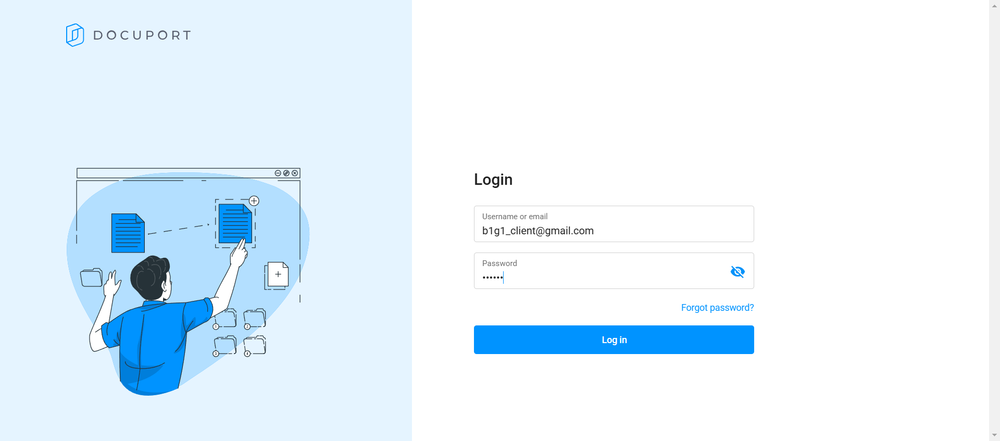

-
Docuport Login Logout Feature
11:29:26 AM / 00:00:29:951 Fail
Docuport Login Logout Feature
03.06.2025 11:29:26 AM 03.06.2025 11:29:56 AM 00:00:29:951 · #test-id=1FailLogin as a clientGiven user is on Docuport login pageWhen user enters username for clientCurrent url is: https://beta.docuport.app/login?redirect=%2FLogin as a clientAnd user enters password for clientCurrent url is: https://beta.docuport.app/login?redirect=%2FLogin as a clientAnd user click login buttonCurrent url is: https://beta.docuport.app/login?redirect=%2FLogin as a clientAnd user click continue buttonThen user validate left navigate itemsHome Received docs My uploads Invitations io.loop.step_definitions.Hook.tearDown(io.cucumber.java.Scenario)Login as a clientFailLogin as an employeeGiven user is on Docuport login pageWhen user enters username for employeeAnd user enters password for employeeStep skippedAnd user click login buttonStep skippedThen user validate left navigate itemsHome Received docs My uploads Clients Users Bookkeeping 1099 Form Reconciliations Step skippedio.loop.step_definitions.Hook.tearDown(io.cucumber.java.Scenario)FailLogin as an advisorGiven user is on Docuport login pageWhen user enters username for advisorStep skippedAnd user enters password for advisorStep skippedAnd user click login buttonStep skippedThen user validate left navigate itemsHome Received docs My uploads Clients Invitations Users Leads Bookkeeping 1099 Form Reconciliations Step skippedio.loop.step_definitions.Hook.tearDown(io.cucumber.java.Scenario)FailLogin as a supervisorGiven user is on Docuport login pageWhen user enters username for supervisorStep skippedAnd user enters password for supervisorStep skippedAnd user click login buttonStep skippedThen user validate left navigate itemsHome Received docs My uploads Clients Users Leads Bookkeeping 1099 Form Reconciliations Step skippedio.loop.step_definitions.Hook.tearDown(io.cucumber.java.Scenario)
-
java.lang.AssertionError
1 tests
java.lang.AssertionError
1 failedStatus Timestamp TestName Fail 11:29:36 AM Then user validate left navigate items Docuport Login Logout Feature.Login as a client.Then user validate left navigate items -
org.openqa.selenium.remote.UnreachableBrowserException
6 tests
org.openqa.selenium.remote.UnreachableBrowserException
6 failedStatus Timestamp TestName Fail 11:29:48 AM When user enters username for employee Docuport Login Logout Feature.Login as an employee.When user enters username for employeeFail 11:29:56 AM io.loop.step_definitions.Hook.tearDown(io.cucumber.java.Scenario) Docuport Login Logout Feature.Login as an employee.io.loop.step_definitions.Hook.tearDown(io.cucumber.java.Scenario)Fail 11:29:56 AM Given user is on Docuport login page Docuport Login Logout Feature.Login as an advisor.Given user is on Docuport login pageFail 11:29:56 AM io.loop.step_definitions.Hook.tearDown(io.cucumber.java.Scenario) Docuport Login Logout Feature.Login as an advisor.io.loop.step_definitions.Hook.tearDown(io.cucumber.java.Scenario)Fail 11:29:56 AM Given user is on Docuport login page Docuport Login Logout Feature.Login as a supervisor.Given user is on Docuport login pageFail 11:29:56 AM io.loop.step_definitions.Hook.tearDown(io.cucumber.java.Scenario) Docuport Login Logout Feature.Login as a supervisor.io.loop.step_definitions.Hook.tearDown(io.cucumber.java.Scenario)
-
@smoke
4 tests
@smoke
4 failedStatus Timestamp TestName Fail 11:29:26 AM Login as a client Docuport Login Logout Feature.Login as a clientFail 11:29:47 AM Login as an employee Docuport Login Logout Feature.Login as an employeeFail 11:29:56 AM Login as an advisor Docuport Login Logout Feature.Login as an advisorFail 11:29:56 AM Login as a supervisor Docuport Login Logout Feature.Login as a supervisor -
@hw
4 tests
@hw
4 failedStatus Timestamp TestName Fail 11:29:26 AM Login as a client Docuport Login Logout Feature.Login as a clientFail 11:29:47 AM Login as an employee Docuport Login Logout Feature.Login as an employeeFail 11:29:56 AM Login as an advisor Docuport Login Logout Feature.Login as an advisorFail 11:29:56 AM Login as a supervisor Docuport Login Logout Feature.Login as a supervisor
Started
Mar 6, 2025 11:29:26 AM
Ended
Mar 6, 2025 11:29:56 AM
Features Passed
0
Features Failed
1
Features
Scenarios
Steps
Timeline
Tags
| Name | Passed | Failed | Skipped | Others | Passed % |
|---|---|---|---|---|---|
| @smoke | 0 | 4 | 0 | 0 | 0% |
| @hw | 0 | 4 | 0 | 0 | 0% |